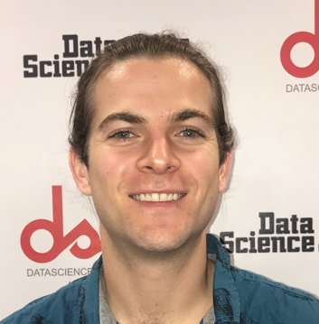
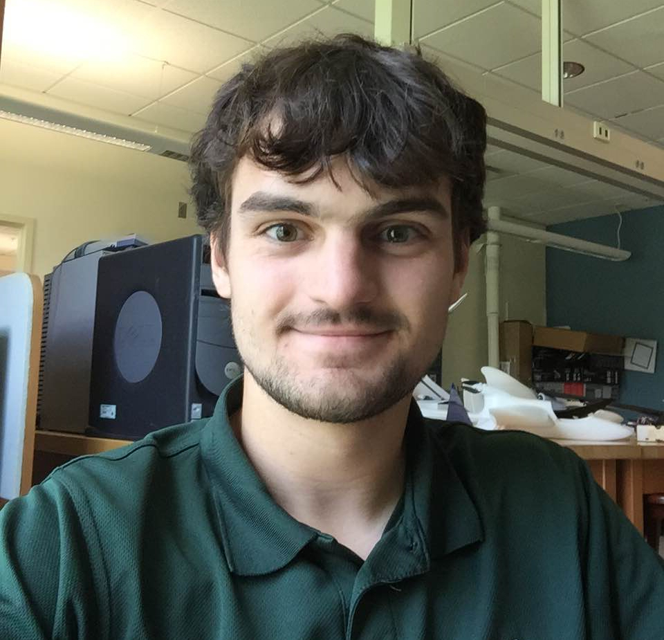
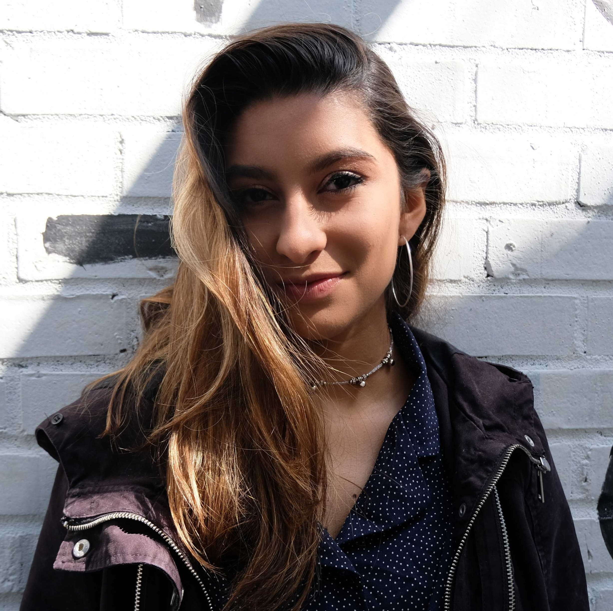
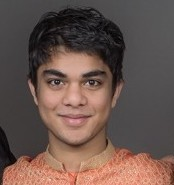
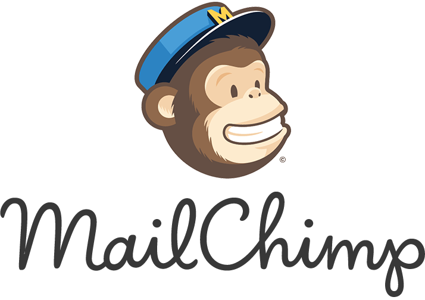

Deep Learning @ UGA
All Experience Levels Welcome
We are an interdisciplinary group of students, faculty, researchers, and practitioners of deep learning who meet regularly to discuss our work and that of the field. We welcome participants and speakers of all experience levels, including if you are...
- ...a deep learning expert, interested in discussing the latest trends and discoveries
- ...just starting out, having worked through a few examples but want to learn more
- ...familiar with the achievements of deep learning but don't know anything about how it works
What is Deep Learning?
Deep learning refers to a subclass of artificial intelligence algorithms used to model complex data spaces through successive (aka “deep”) transformations on samples from those spaces.
Upcoming speaker
Reza Katebi
DeLUG will be hosting an event on TUESDAY March 26th at 5pm in Boyd 208! Come out to hear from Reza Katebi who will be presenting a talk on 'Galaxy Morphology Predictions Using Capsule Networks'.Understanding morphological types of galaxies is a key parameter for studying their formation and evolution. Neural networks that have been used previously for galaxy morphology classification have some disadvantages, such as not being invariant under rotation. In this work, we studied the performance of Capsule Network, a recently introduced neural network architecture that is rotationally invariant and spatially aware, on the task of galaxy morphology classification. We designed two evaluation scenarios based on the answers from the question tree in the Galaxy Zoo project. In the first scenario, we used Capsule Network for regression and predicted probabilities for all of the questions. In the second scenario, we chose the answer to the first morphology question that had the highest user agreement as the class of the object and trained a Capsule Network classifier, where we also reconstructed galaxy images. We achieved promising results in both of these scenarios. Automated approaches such as the one introduced here will greatly decrease the workload of astronomers and will play a critical role in the upcoming large sky surveys.
Student Organizing Committee
The group is UGA student-run and organized, from who to invite to speak, to where and when the group meets.
-
Christian McDaniel
President of DELUG.
M.S. in Artificial Intelligence. Graduating Spring 2019.
Advisor: Dr. Shannon Quinn. -
Nick Angelastro

Vice President of DELUG
B.S. in Computer Science & Math Graduating Summer 2019.
Advisor: Dr. Shannon Quinn. -
Zach Jones
Treasurer of DELUG.
M.S. in Artificial Intelligence.
-
Sonia Rao
PR Chair of DELUG.
B.S. in Computer Science.
B.A. in Economics.
Reasearch Interests: Bioimaging with Deep Learning.
Graduating Spring 2020.
-
Sumer Singh
Web Master.
M.S. in Artificial Intelligence. Graduating Spring 2020.
Faculty Supervisory Board
Oversee the activities of the interest group.
-
Shannon Quinn

Computer Science, Cellular Biology
Founder
-
Tianming Liu

Computer Science
Founder
-
Yi Hong

Computer Science
Advisor
-
Ping Ma
Statistics
Advisor
-
WenXuan Zhong

Statistics
Advisor
-
WenZhan Song

Engineering
Advisor
Sponsors
Our sponsors
Hosted Institutions
Institutions represented by past speakers
-
Institute of Artificial Intelligence
University of Georgia -
Department of Computer Science
University of Georgia -
 Department of Biomedical Engineering
Department of Biomedical Engineering
Georgia Institute of Technology & Emory University -
College of Computing
Georgia Institute of Technology -
School of Medicine
Emory University -

Mail Chimp